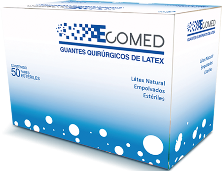

GuanteS de cirujano 
Modelo GTE-ECO-6.0

DESCRIPCIÓN:
Empolvados y esterilizados en rayos Gamma, de látex natural y almidón de maíz absorbible. Forma de manos: dedos curvados anatómicamente, acabado superficial para adhesión a la piel y puño con borde.
ESPECIFICACIONES TÉCNICAS:
Fabricados con látex natural para mayor suavidad y confort. Empolvados con algodón de maíz absorbible USP, aprobado por la FDA de Estados Unidos. Diseñado ergonómicamente para proveer el confort requerido durante largos procedimientos quirúrgicos.
Cumplen con todos los requerimientos EN455. Empaque y configuración económicos para maximizar el almacenaje. Las características del puño con borde permiten colocarse fácilmente. Mayor largo que cualquiera del puño hacia la bata del cirujano.
Tamaños:
Guante de látex para cirugía del No. 6.0.
Guante de látex para cirugía del No. 6.5.
Guante de látex para cirugía del No. 7.0.
Guante de látex para cirugía del No. 7.5.
Guante de látex para cirugía del No. 8.0.
Guante de látex para cirugía del No. 8.5.
DATOS COMPLEMENTARIOS: Si desea obtener más información, favor de contactar a:
ECOMED, S.A. DE C.V.
Tels.: CDMX: (55) 5698-6747, 7699-9948
Tel. Chihuahua (matriz): (614) 423-4500
Lada sin costo: 01 800-633-4225
e-mail: info@detecto.mx
www.ecomed.mx